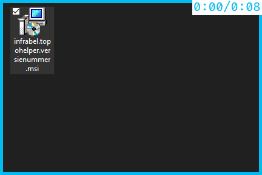

Installeren van de applicatie¶
Downloaden¶
Download hier de laatste versie van de software via onze GitHub releases pagina. Indien je een overzicht wenst van alle voorgaande versies, of een oudere versie wenst te downloaden, kijn dan even hier.
Uitpakken¶
Het is niet nodig om de bestanden uit te pakken, een instalatie bestand is voorzien.
Installeren¶
Voor de instalatie maak je gebruik van het meegeleverde instalatie bestand in de download. Dubbelklikken op het bestand zou alles moeten op de correcte plaats instaleren. Eens geïnstaleerd zijn de commando’s beschikbaar in AutoCAD.
